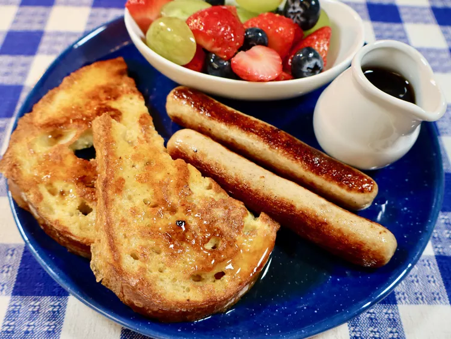

Home
French Toast Without Milk

Description
This French toast without milk is perfect for those who like a more solid French toast. My son's friends
really liked this and would ask for the recipe to take home for their moms to make! Serve with butter
and syrup.
Ingredients
- 1 tablespoon white or brown sugar
- 2 large eggs
- 1 teaspoon vanilla extract
- ½ teaspoon ground cinnamon
- ¼ teaspoon ground nutmeg
- 1 tablespoon unsalted butter
- 4 slices white bread
Steps
- Gather the ingredients.
- Beat eggs in a wide mixing bowl; mix in sugar,
vanilla extract, cinnamon, and nutmeg.
- Melt butter in a skillet over medium-low heat.
- Dip 2 slices of bread into egg mixture, ensuring both
sides are covered; place in the skillet and cook until
golden brown, about 4 minutes per side. Repeat with
remaining 2 slices of bread. Serve warm.